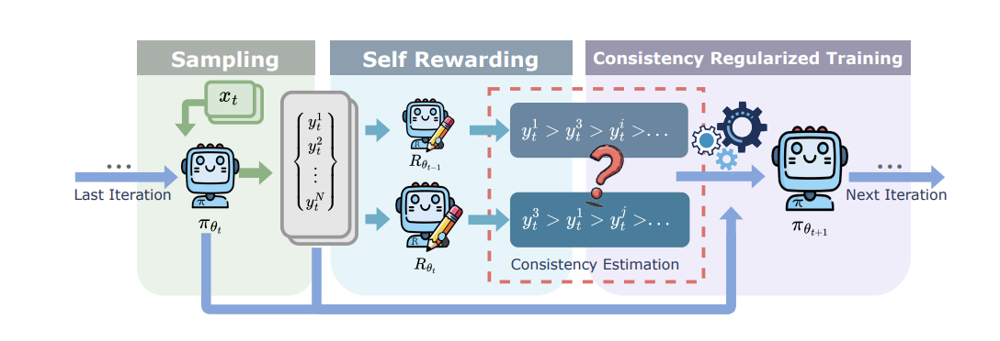
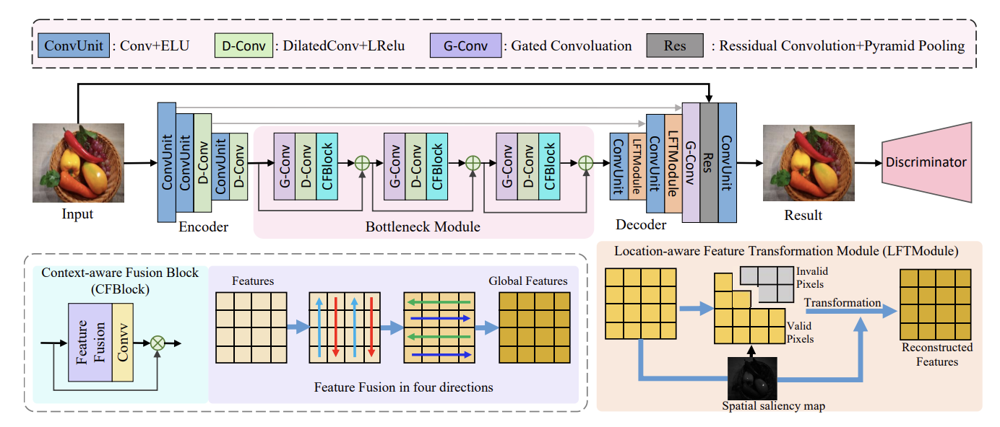
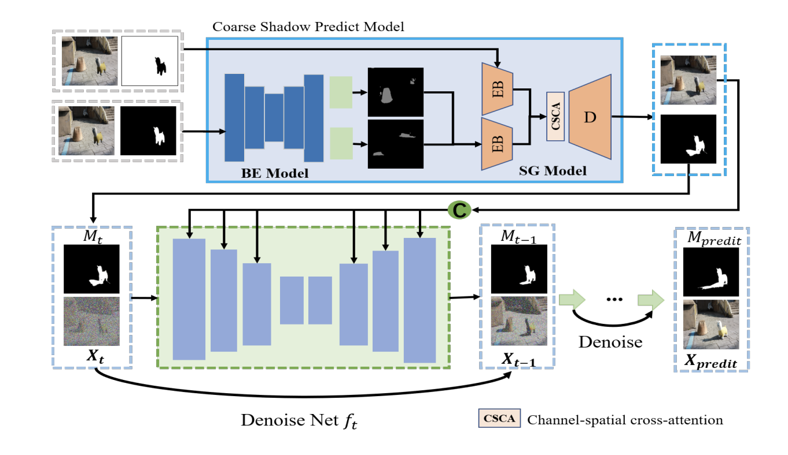
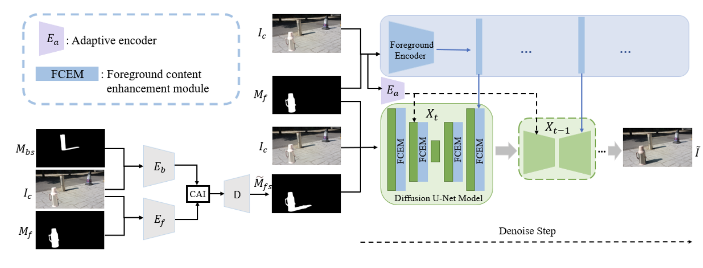
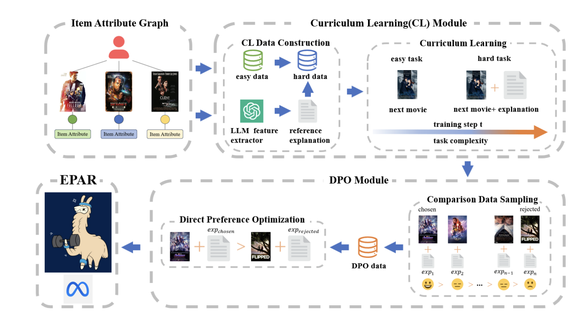

|
Weilei He I'm an undergraduate student from the School of Computer Science at Wuhan University, supervised by Prof. Chunxia Xiao. Currently, I am an remote research intern supervised by Prof. Huaxiu Yao at University of North Carolina at Chapel Hill. Also, I've had the privilege of being supervised by Prof. Ying Wei at Nanyang Technological University. I'm actively seeking PhD opportunities(Fall 2025). |

|
ResearchMy research interest focuses on safe generation of LLMs and LLM alignment. Specially, I am interested in the application of LLMs on multiple areas(e.g. Computer Vision). My publications and preprints are listed below. |
|

|
Cream: Consistency Regularized Self-Rewarding Language Models
Zhaoyang Wang, Weilei He, Zhiyuan Liang, Xuchao Zhang, Chetan Bansal, Ying Wei, Weitong Zhang, Huaxiu Yao Submitting to ICLR 2025 | PDF |
|

|
HighlightRemover: Spatially Valid Pixel Learning for Image Specular Highlight Removal
Ling Zhang, Yidong Ma, Zhi Jiang, Weilei He, Zhongyun Bao, Gang Fu, Wenjun Xu, Chunxia Xiao ACM Multimedia 2024 | PDF |
|

|
Foreground Harmonization and Shadow Generation for Composite Image
Jing Zhou, Ziqi Yu, Zhongyun Bao, Gang Fu, Weilei He, Chao Liang, Chunxia Xiao ACM Multimedia 2024 | PDF |
|

|
CFDiffusion: Controllable Foreground Relighting in Image Compositing via Diffusion Model
Ziqi Yu, Jing Zhou, Zhongyun Bao, Gang Fu, Weilei He, Chao Liang, Chunxia Xiao ACM Multimedia 2025 | PDF |
|

|
Digging Deeper into your interest: Explainable Preference Analytical Recommender
Zhiyuan Liang, Zhaoyang Wang, Weilei He, Ziyi Zhao Submitting to KDD 2025 | PDF |
Misc
I started vocal practice at the age of 5 and continued until I was 12. At the same time, I studied saxophone for 5 years. When I was a child, I won many great awards for vocal and saxophone performance. Based on my love for music, especially vocal music, I joined the Renwen Philharmonic Chamber Choir in college. As a bass, I sang and performed classic works of many musicians including Bach, Mozart, Brahms, and as a conductor, I led the Choir of School of Computer Science from the last place to the third place in the competitions.
|
|
Website template from here. |